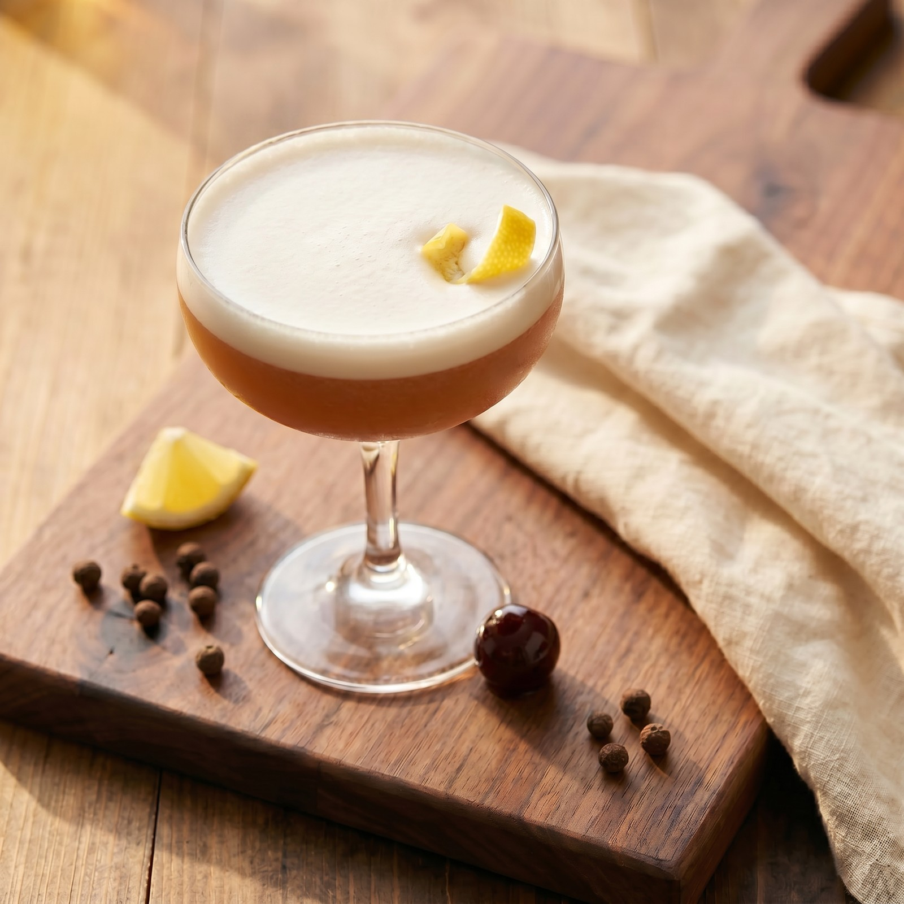

A richer, more layered take on the classic amaretto sour. Sweet almond liqueur meets spicy rye whiskey, warm allspice dram, bright lemon, and a few dashes of chocolate bitters. The egg-white foam gives it a velvety body and a polished, cocktail-bar finish.
Chill the glass. Pop a coupe into the freezer (or fill it with ice water) while you build the drink. A cold glass is the difference between silky foam and one that collapses on the first sip.
Build in a dry shaker. Combine the rye, amaretto, allspice dram, fresh lemon juice, chocolate bitters, and egg white in the shaker — no ice yet.
Tip: juice the lemon at the last second. Fresh lemon juice goes flat within an hour, which dulls the brightness against the amaretto.
Dry shake hard for ~15 seconds. Without ice, the egg white emulsifies and builds the velvety foam. You'll hear the mixture turn quieter and feel the shaker grow lighter as the foam sets up.
Add ice and shake again. Fill the shaker with ice and shake another 15 seconds, until the tin is painfully cold and frosted. This second shake chills, dilutes, and aerates the foam.
Double strain into the chilled coupe. Pour through both the hawthorne and a fine-mesh strainer to catch every shard of ice. Let the foam settle into a clean white cap on top.
Garnish and serve immediately. Express a lemon twist over the surface (oil-side down) and drop it in, or perch a brandied cherry beside the stem. Serve while the foam is still mounded.
Drink it fresh. The foam is at its silkiest in the first few minutes — don't let it sit. For a pitcher, build all of the liquid ingredients (including the egg whites) ahead, then dry shake and ice shake in two-drink batches so the foam doesn't break before it lands in the glass.
Ice in the shaker too early flattens the egg white. Build the foam without ice, then add ice for the chill-and-dilute pass.
Bulleit Rye or Pike Creek Rye both work. You want the spice to push back against the amaretto's sweetness — a soft bourbon will get lost.
Half an ounce is plenty — it adds the warm baking-spice note that lifts this drink above a standard sour. St. Elizabeth or Hamilton both work.
Bottled lemon juice tastes like aluminum next to the amaretto. Squeeze right before you shake.
Cartoned egg whites foam just as well as fresh and skip the raw-egg concern. Use about 1 tablespoon per drink.
Twist the peel over the foam, oil-side down, before garnishing. The lemon oil sits on the surface and lifts every sip.
Four dashes max. Any more and the chocolate fights the citrus instead of supporting the amaretto's nutty base.
The fine-mesh strainer keeps ice chips out so the foam stays smooth and the body of the drink reads polished, not slushy.